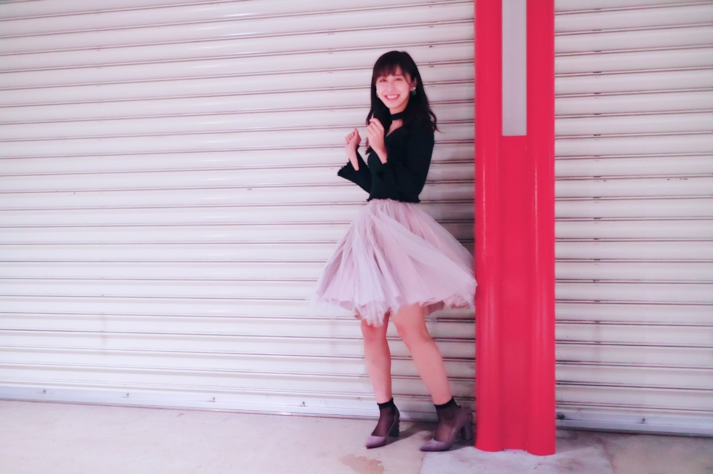

| 2017/03 13 Mon | ひらり。 |
今日はサンドイッチの日。
3と3で1をサンドしている日だからって！！
見た目で決まるって面白い。
色々あって楽しいね〜◎
私はサンドイッチの中では
タマゴサンドと、フルーツサンドが好きです。
あと家でたまーにやるのは
ピーナッツバターとイチゴジャムを
片面づつに塗ってサンドするサンドイッチ！
物凄くカロリーが高いのは分かってるんだけど
美味しくて美味しくてたまらないのヽ(；；)丿
是非やってみてください！！
フルーツサンドはフルーツ切ったり生クリーム泡立てたり手間がかかるけど
これなら塗るだけだから◎
昨日の握手会の服を紹介〜
#chihaOOTD
4部

スカートをどうしてもひらりとしたい。1
tops: snidel
skirt: snidel
shoes: CHARLES & KIETH
のぎ天のロケでも着ていた、
白いお気に入りのトップスと
ふんわりチュールスカートで
春の装いを！！
でもトップスはニットなので
まだまだ肌寒い今にぴったりです〜
靴下はシースルーの白で
トップスと合わせてみました！
おすまし。
愛未が撮ってくれたんだけど、
これ愛未のお気に〜って言ってくれた\( ˆ ˆ )/
5部

スカートをどうしてもひらりとしたい。2
tops: one spo
skirt: snidel
shoes: CHARLES & KIETH
チョーカーしているように見えるけど
実は服と繋がっている
チョーカートップスっていう服です！
さり気なくラメが入っているので
キラキラしていて可愛い〜
トップスに合わせて靴下は黒のシースルーに！
黒にするだけで雰囲気が変わるね◎
にこ〜〜〜
実は今回4部も5部もスカートは一緒！
スカートの着回しをしてみましたっ
髪型も一緒なのだけど、
少し雰囲気変わって見えるよね、
おしゃれするのって楽しいな☺︎
--------------------------------------------------♡
♬ ChihaMusic
「恋する」SHISHAMOさん
この歌詞が可愛すぎる！！
少女マンガみたいで憧れる◎
少女マンガっ子だったから...
友達だと思ってたのに
実は好きになっていたって
なんて青春なんだろう。
可愛い...！
"一度私のこの手を握って
「友達だなんて思ったことない」とか
言って見せてよ"
こんな事言われたらきゅんとするね！
女の子だったら誰でもきゅんとすると思う〜
SHISHAMOさん好きだな〜♡
今日もChihAnswer募集しますっ
お待ちしています〜☺︎☺︎
おやすみ
斎藤ちはる
コメント(324)
2017/03/13 23:59